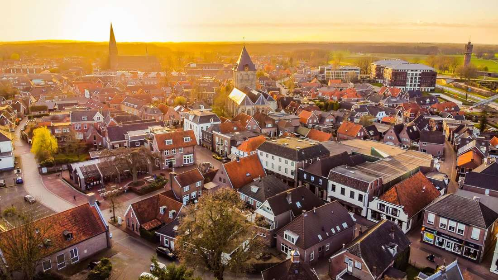

-35%- Delden2 nachten
- Raalte2 nachten
- Markelo2 nachten
Fietsvakantie met 3 hotels
Delden · Raalte · Markelo
7-daagse fietsvakantie Twente & Salland: Delden – Raalte – Markelo incl. dagelijks 3-gangendiner
Fietsvakantie
- 6 nachten / 3 hotels
- Dagelijks 3-gangendiner
- Dagelijkse bagagetransfer
- Fietsroutes op je telefoon
2 personen, 6 nachten
Vanaf
€1.059
€1.635
Bekijk